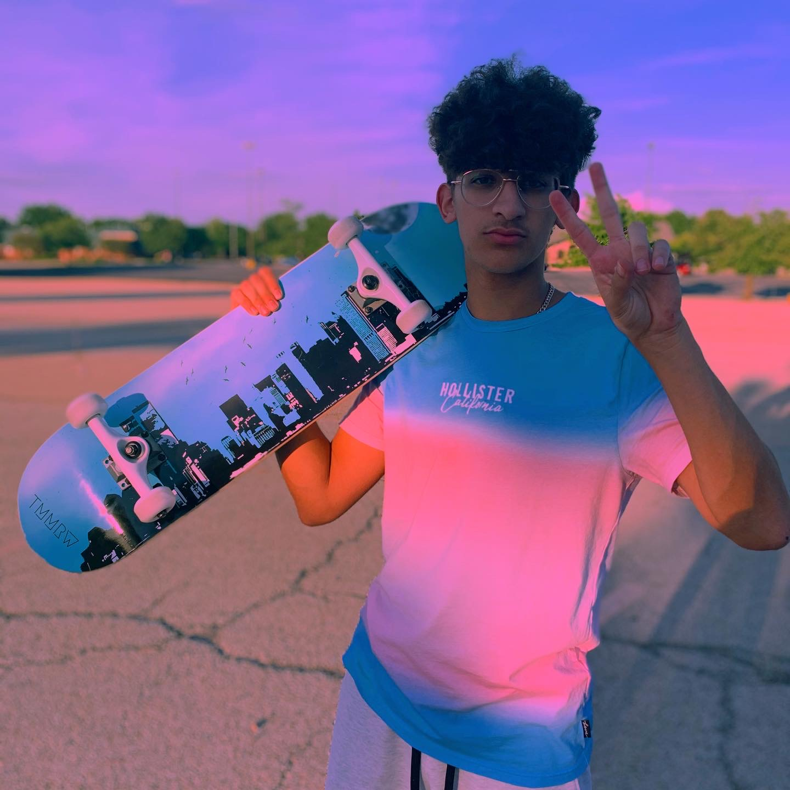
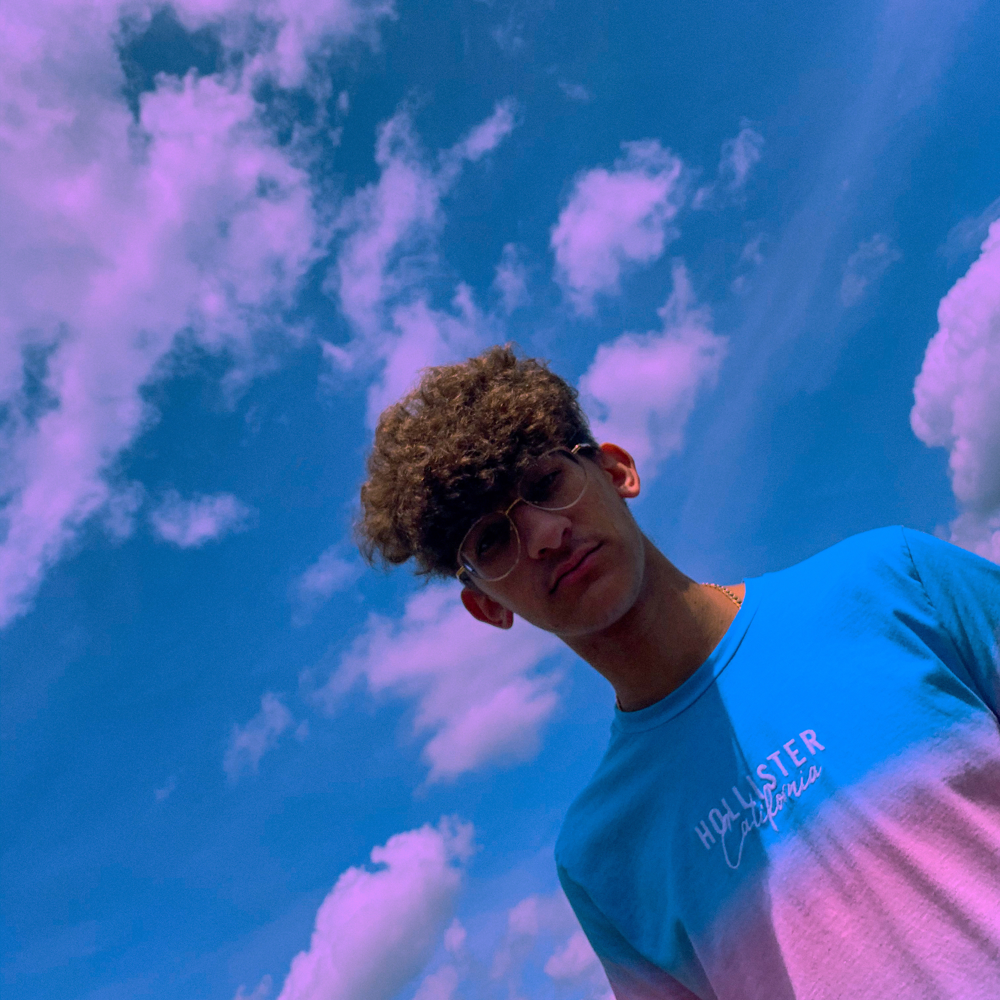
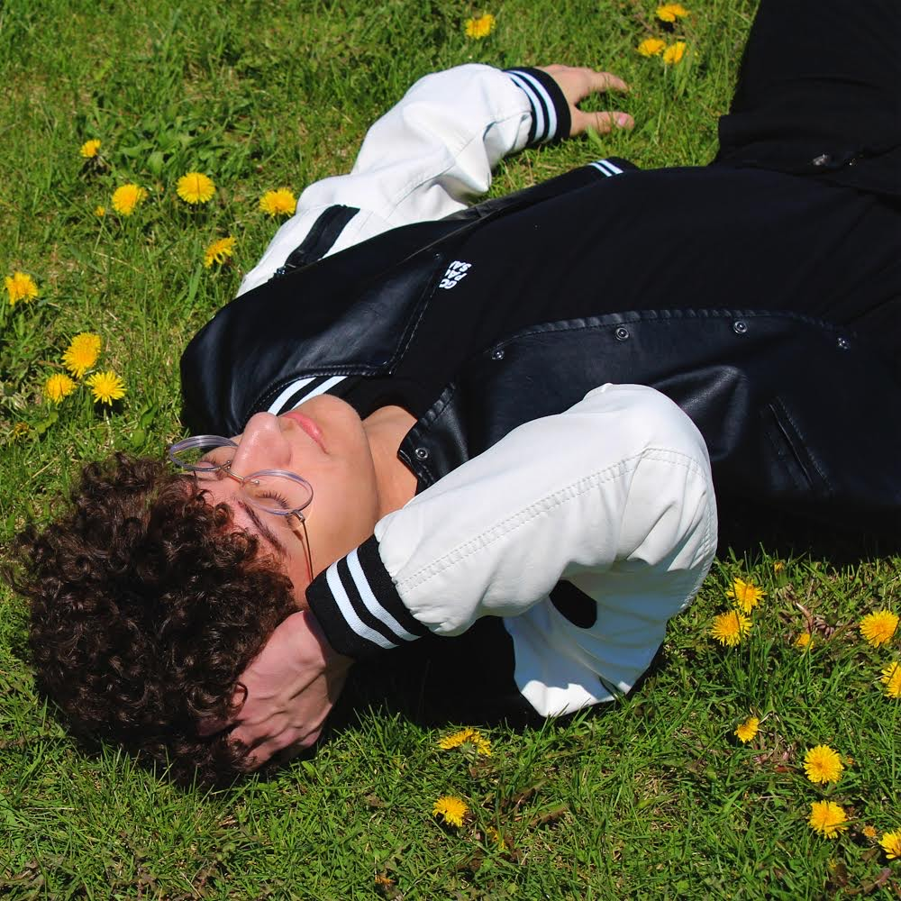

About Me
My name is Zak Zaghloul and I love to make websites! I am a beginner programmer who is versed in HTML, CSS, and some Javascript. I first got into web design a few years ago when researching how to develop a website for myself and my friend as a music artist. Eventually I ended up designing my first website for myself using Wordpress and that gave me a introduction to web design as a whole. Click "Resume" to see my full resume and all of my skills!